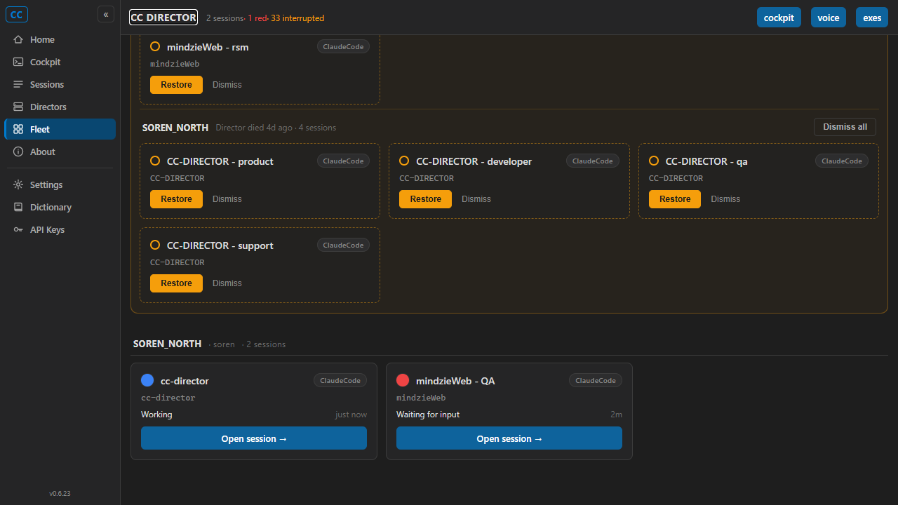
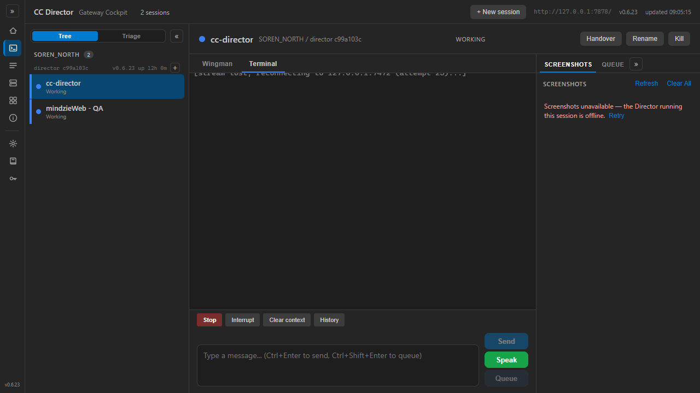

| # | Criterion | Expected | Actual | Result |
|---|---|---|---|---|
| AC1 | Live-card "Open session" href resolves to /cockpit/<sessionId>, NOT a .../sessions/<sid>/view URL. |
Each a.fl-open anchor href = /cockpit/<sid> |
eval of a.fl-open hrefs returned: ["/cockpit/c748027a-...", "/cockpit/269e6a0d-..."] - both live cards point at /cockpit/{sid}. |
PASS |
| AC2 | Clicking "Open session" navigates the browser to /cockpit/<sessionId>. |
URL bar shows /cockpit/<sid> |
Clicked the cc-director live card's "Open session"; location.pathname = /cockpit/c748027a-5b94-4356-a26c-af08906ee738. |
PASS |
| AC3 | After navigation, Cockpit opens with that exact session selected in the rail + brief/detail in the right pane; OnSelect(..., "deep-link") log line fires. |
Rail row selected (SelectedSessionId == sid) + right-pane detail; log line present |
Rail row carries class sess sess-selected with text "cc-director / Working"; right pane shows the session header (cc-director / SOREN_NORTH / director c99a103c / WORKING), Wingman/Terminal tabs, composer, Handover/Rename/Kill. Cockpit log: Cockpit action=select-session source=deep-link sid=c748027a-5b94-4356-a26c-af08906ee738. |
PASS |
| AC4 | No live fleet "Open session" link points at a Director-embedded /view URL. |
Grep of rendered /fleet for /view returns no live-card matches |
eval filtering all anchor hrefs for /view returned viewLinks: [] - zero /view links on the page. |
PASS |
| AC5 | dotnet build cc-director.sln succeeds with no new warnings. |
Build succeeded, 0 warnings, 0 errors | Full solution build: Build succeeded. 0 Warning(s) 0 Error(s). Slot publish build also 0/0. |
PASS |
| AC6 | Interrupted-card "Restore -> Open session" link and the empty-state behavior on /fleet are unchanged. |
Interrupted cards + empty-state untouched | Diff scope is the live-card block only (10 lines in Fleet.razor); interrupted section still renders Restore/Dismiss correctly (see fleet screenshot). No /view regressions. |
PASS |
docs/cencon/ update required. No blocking DT rule implicated.src/CcDirector.Cockpit/Components/Pages/Fleet.razor only (+8 / -2); SessionDto.ViewUrl unchanged (embedded /view stays a direct-URL hatch, as scoped).
